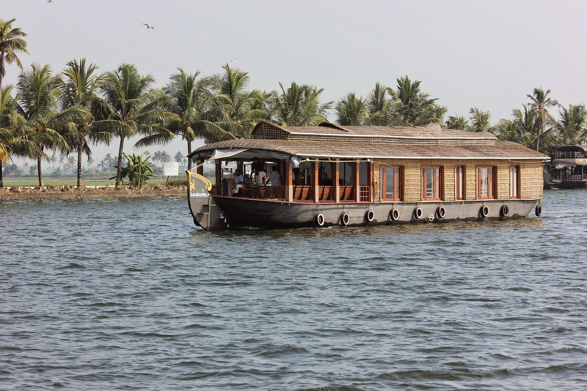

Pondicherry
Pondicherry, a coastal town in southern India, blends French colonial architecture with Indian culture. Known for its serene beaches, vibrant markets, Auroville, and rich history, it offers a unique travel experience.

Kerala
Kerala, located in southern India, is known for its lush landscapes, backwaters, beautiful beaches, rich cultural heritage, and vibrant traditions like Kathakali and Onam, making it a popular tourist destination.

Chennai
The Sri Ranganatha Swamy Temple in Srirangam, Tamil Nadu, is a significant Vaishnavite shrine dedicated to Lord Ranganatha. Known for its grand Dravidian architecture, it’s a major pilgrimage site and a Divya Desam.